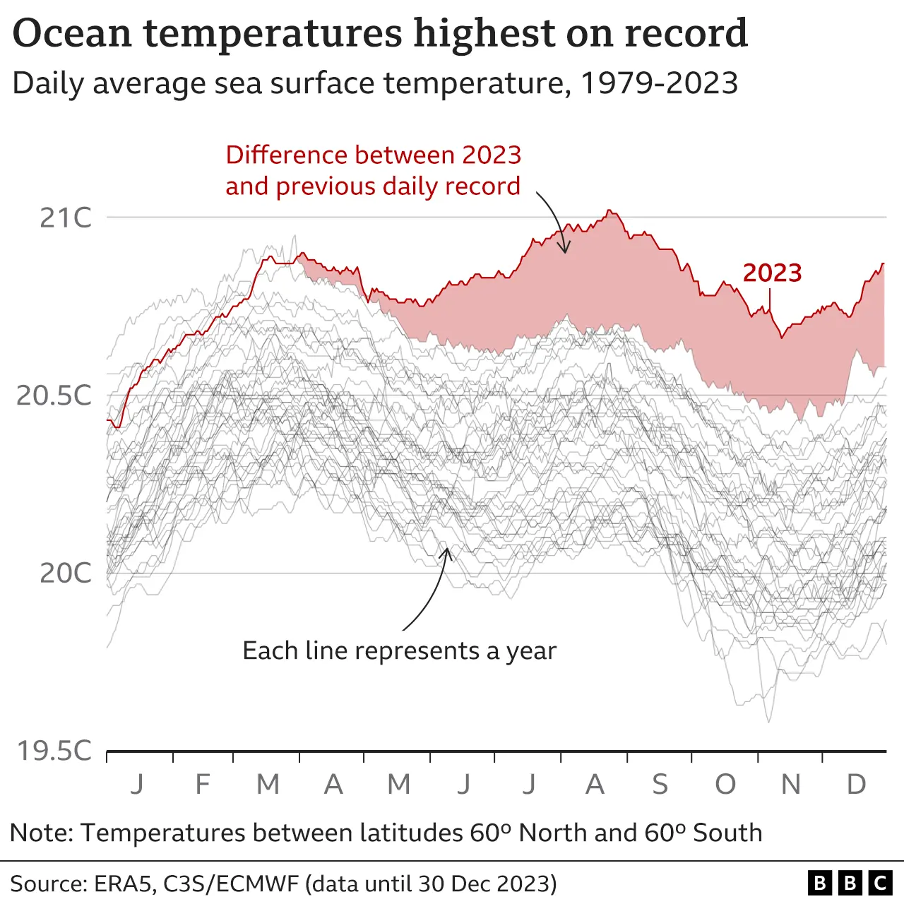

Metabolism Effects on Foraging Across Temperatures
02:00
02:00


02:00


02:00
02:00
Note that this starter code incorporates many of the strategies we’ve discussed in past lectures: turning a theme into a function, creating a color palette (and also point shape and size scales), and axis labels outside of the ggplot code, and using {ggtext} to apply markdown to plot text:
##~~~~~~~~~~~~~~~~~~~~~~~~~~~~~~~~~~~~~~~~~~~~~~~~~~~~~~~~~~~~~~~~~~~~~~~~~~~~~~
## setup ----
##~~~~~~~~~~~~~~~~~~~~~~~~~~~~~~~~~~~~~~~~~~~~~~~~~~~~~~~~~~~~~~~~~~~~~~~~~~~~~~
#.........................load libraries.........................
library(tidyverse)
#..........................read in data..........................
# read in Google Sheet ----
lobs <- googlesheets4::read_sheet("https://docs.google.com/spreadsheets/d/1DkDVcl_9rlaqznHfa_v1V1jtZqcuL75Q6wvAHpnCHuk/edit#gid=2143433533") |>
mutate(temp = as.factor(temp))
# alternatively, read in csv file ----
lobs <- read_csv(here::here("week6", "data", "metabolism-foraging-data.csv")) |>
mutate(temp = as.factor(temp))
##~~~~~~~~~~~~~~~~~~~~~~~~~~~~~~~~~~~~~~~~~~~~~~~~~~~~~~~~~~~~~~~~~~~~~~~~~~~~~~
## create lobster plot ----
##~~~~~~~~~~~~~~~~~~~~~~~~~~~~~~~~~~~~~~~~~~~~~~~~~~~~~~~~~~~~~~~~~~~~~~~~~~~~~~
#..........................create theme..........................
lob_theme <- function(){
theme_light() +
theme(
axis.title.x = ggtext::element_markdown(size = 13,
margin = margin(t = 1, r = 0, b = 0, l = 0, unit = "lines")),
axis.title.y = ggtext::element_markdown(size = 13,
margin = margin(t = 0, r = 1, b = 0, l = 0, unit = "lines")),
axis.text = element_text(color = "black", size = 12),
panel.border = element_rect(colour = "black", size = 0.7),
panel.grid = element_blank(),
legend.title = element_text(size = 11),
legend.text = element_text(size = 10),
legend.position = c(0.95, 0.95),
legend.justification = c(0.95, 0.95),
legend.box.background = element_rect(color = "black", size = 1.1)
)
}
#..........................create scales.........................
lob_palette <- c("11" = "#7B8698",
"16" = "#BAD7E5",
"21" = "#DC7E7C",
"26" = "#7D3E40")
lob_shapes <- c("11" = 15,
"16" = 16,
"21" = 17,
"26" = 18)
lob_sizes <- c("11" = 6,
"16" = 6,
"21" = 6,
"26" = 7)
#........................create plot text........................
x_axis_lab <- glue::glue("Resting Metabolic Rate<br>
(mg O<sub>2</sub> kg<sup>-1</sup> min<sup>-1</sup>)")
y_axis_lab <- glue::glue("Maximum Consumption Rate<br>
(prey consumed predator<sup>-1</sup> 24hr<sup>-1</sup>)")
#............................plot data...........................
lob_plot <- ggplot(lobs, aes(x = SMR, y = avg_eaten,
color = temp, shape = temp, size = temp)) +
geom_point() +
scale_color_manual(values = lob_palette, name = "Temperature (ºC)") +
scale_shape_manual(values = lob_shapes, name = "Temperature (ºC)") +
scale_size_manual(values = lob_sizes, name = "Temperature (ºC)") +
scale_x_continuous(breaks = seq(0, 1.5, by = 0.2)) +
scale_y_continuous(breaks = seq(0, 35, by = 5)) +
labs(x = x_axis_lab,
y = y_axis_lab) +
lob_theme()
lob_plot
Your turn! Create another text label and arrow pointing to lobster IV19 (the farthest dark red diamond to the right). You don’t need to choose this exact location for your text and arrow:
05:00
A solution (you may have chosen a different placement for your text and arrow):
lob_plot +
annotate(
geom = "text",
x = 0.3, y = 20.1,
label = "IV10",
hjust = "left",
size = 5
) +
annotate(
geom = "curve",
x = 0.29, xend = 0.184,
y = 20, yend = 9.43,
arrow = arrow(length = unit(0.3, "cm")),
linewidth = 0.6
) +
annotate(
geom = "text",
x = 1.19,
y = 5.25,
label = "IV19",
hjust = "right",
size = 5
) +
annotate(
geom = "curve",
x = 1.2, xend = 1.31,
y = 5, yend = 14,
arrow = arrow(length = unit(0.3, "cm")),
linewidth = 0.6
)
##~~~~~~~~~~~~~~~~~~~~~~~~~~~~~~~~~~~~~~~~~~~~~~~~~~~~~~~~~~~~~~~~~~~~~~~~~~~~~~
## setup ----
##~~~~~~~~~~~~~~~~~~~~~~~~~~~~~~~~~~~~~~~~~~~~~~~~~~~~~~~~~~~~~~~~~~~~~~~~~~~~~~
#.........................load libraries.........................
library(tidyverse)
#..........................read in data..........................
# read in Google Sheet ----
mono <- googlesheets4::read_sheet("https://docs.google.com/spreadsheets/d/1o0-89RFp2rI2y8hMQWy-kquf_VIzidmhmVDXQ02JjCA/edit#gid=164128885")
# alternatively, read in csv ----
mono <- read_csv(here::here("week6", "data", "mono.csv"))
##~~~~~~~~~~~~~~~~~~~~~~~~~~~~~~~~~~~~~~~~~~~~~~~~~~~~~~~~~~~~~~~~~~~~~~~~~~~~~~
## create Mono Lake plot ----
##~~~~~~~~~~~~~~~~~~~~~~~~~~~~~~~~~~~~~~~~~~~~~~~~~~~~~~~~~~~~~~~~~~~~~~~~~~~~~~
ggplot(data = mono, aes(x = year, y = lake_level)) +
geom_line() +
labs(x = "\nYear",
y = "Lake surface level\n(feet above sea level)\n",
title = "Mono Lake levels (1850 - 2017)\n",
caption = "Data: Mono Basin Clearinghouse") +
scale_x_continuous(limits = c(1850, 2020),
expand = c(0,0),
breaks = seq(1850, 2010, by = 20)) +
scale_y_continuous(limits = c(6350, 6440),
breaks = c(6370, 6400, 6430),
expand = c(0,0),
labels = scales::label_comma()) +
theme_light() +
theme(
plot.title.position = "plot",
plot.title = element_text(size = 16),
axis.title = element_text(size = 12),
axis.text = element_text(size = 10),
plot.caption = element_text(face = "italic")
)
We can add any other important information to provide better context for our readers. Let’s say we’re also interested in shrimp abundances, which decline above 6,360 feet. Here, we add a baseline at that elevation, along with text:
ggplot(data = mono, aes(x = year, y = lake_level)) +
annotate(
geom = "rect",
xmin = 1941, xmax = 1983,
ymin = 6350, ymax = 6440,
fill = "gray90"
) +
geom_line() +
labs(x = "\nYear",
y = "Lake surface level\n(feet above sea level)\n",
title = "Mono Lake levels (1850 - 2017)\n",
caption = "Data: Mono Basin Clearinghouse") +
scale_x_continuous(limits = c(1850, 2020),
expand = c(0,0),
breaks = seq(1850, 2010, by = 20)) +
scale_y_continuous(limits = c(6350, 6440),
breaks = c(6370, 6400, 6430),
expand = c(0,0),
labels = scales::label_comma()) +
annotate(
geom = "text",
x = 1962, y = 6425,
label = "unrestricted diversions\n(1941 - 1983)",
size = 3
) +
geom_hline(yintercept = 6360,
linetype = "dashed") +
annotate(
geom = "text",
x = 1910, y = 6366,
label = "Decreased shrimp abundance expected\n(6,360 feet above sea level)",
size = 3
) +
theme_light() +
theme(
plot.title.position = "plot",
plot.title = element_text(size = 16),
axis.title = element_text(size = 12),
axis.text = element_text(size = 10),
plot.caption = element_text(face = "italic")
)


{kind=link}